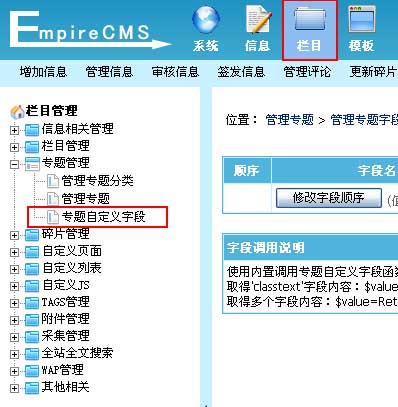
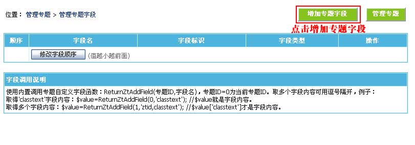
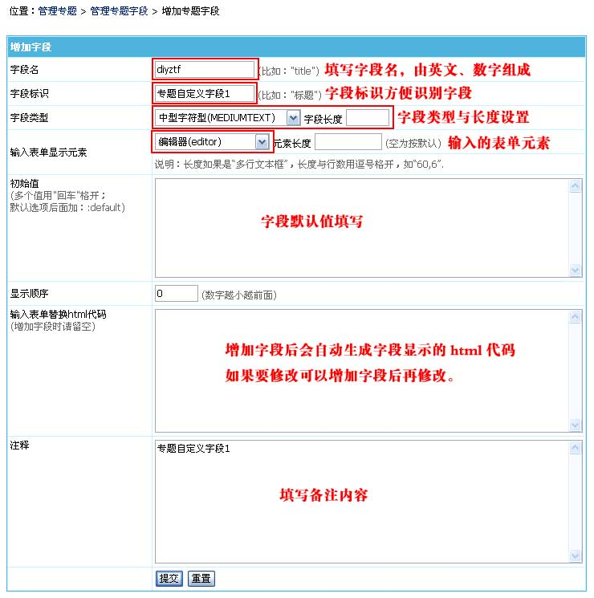
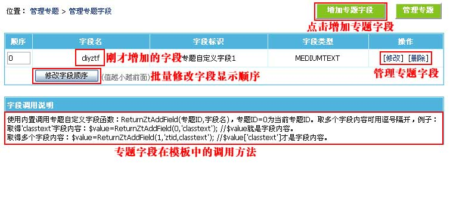
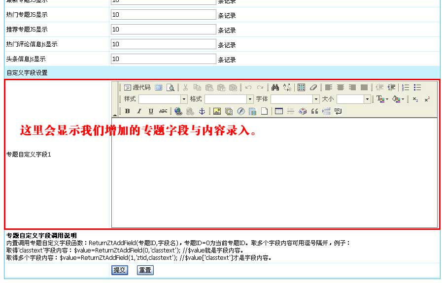

| 专题属性自定义字段功能，可以在各式专题增加相应的特殊属性，让专题更灵活出色。 |
|
||
| 一、增加专题字段 | ||||||||||||||||||||
| 1、登录后台，单击“栏目”菜单，选择“专题自定义字段”子菜单，进入管理专题字段界面： | ||||||||||||||||||||
|  | ||||||||||||||||||||
| 2、进入管理专题字段界面： | ||||||||||||||||||||
|  | ||||||||||||||||||||
| 3、从管理专题字段页面点击“增加专题字段”按钮，进入增加专题字段界面，如下图： | ||||||||||||||||||||
|  | ||||||||||||||||||||
|
| 二、管理专题字段 |
| 1、增加专题字段后，返回管理专题字段界面，就可以看到我们增加的字段： |
|  |
| 2、增加/修改专题页面也可以看到我们增加的专题字段，如图： |
|  |
| 三、专题字段调用说明： |
| 字段调用说明： |
| 使用内置调用专题自定义字段函数：ReturnZtAddField(专题ID,字段名)，专题ID=0为当前专题ID。取多个字段内容可用逗号隔开，例子： 取得'classtext'字段内容：$value=ReturnZtAddField(0,'classtext'); //$value就是字段内容。 取得多个字段内容：$value=ReturnZtAddField(1,'ztid,classtext'); //$value['classtext']才是字段内容。 |
| 范例1：显示当前专题的“diyztf”字段的内容。 |
| diyztf字段内容为：<?=ReturnZtAddField(0,'diyztf')?> |
| 范例2：显示专题ID=2的“diyztf”和“diyztf2”这两个字段的内容。 |
| <?php $ztfr=ReturnZtAddField(2,'diyztf,diyztf2'); ?> diyztf字段内容为：<?=$ztfr['diyztf']?> diyztf2字段内容为：<?=$ztfr['diyztf2']?> |